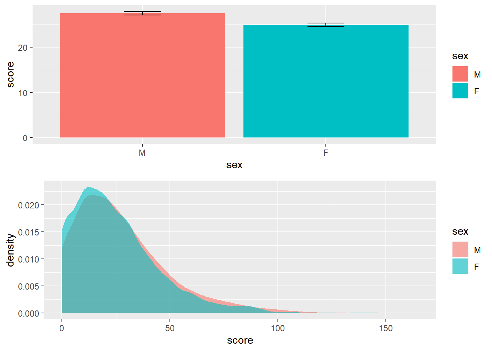

Capítulo 3 Teste T
O Teste T é um teste estatístico frequentemente utilizado para testar hipóteses sobre diferenças entre médias. Dessa maneira, por oferecer uma estimativa à um parâmetro, ele é um teste parâmetrico. Apenas por um preâmbulo histórico, a origem do Teste T remonta o artigo publicado em 1908 por William Gosset. Na época, em função de seu trabalho na cervejaria Guiness, ele não assinou o artigo, mas apenas usou seu pseudônimo Student, motivo pelo qual o teste T também é chamado de Teste T de Student.
Assume-se os seguintes pressupostos na execução de um Teste T:
(i) Os dados são representativos da população
(ii) Os valores foram selecionados aleatoriamente
(iii) A distribuição dos resultados populacionais é assumida como normal
(iv) As variâncias dos grupos é homogênea
É possível estipular que o Teste T pode ser utilizado para comparar a média de uma amostra com a média populacional (one sample t test), ou quando se deseja comparar duas médias amostrais (two samples t test) ou um quando se compara duas médias de uma mesma amostra que foi investigada em dois momentos do tempo (paired t test). Eventualmente, quando os pressupos são violados, versões não-paramétricas podem ser implementadas e a tabela abaixo concatena os testes estatísticos relacionados.
| Nível de medida | Um grupo | Dois grupos independentes | Grupos pareados |
|---|---|---|---|
| Intervalar | One-sample t test | Two-samples t test | Paired t test |
| Ordinal | Signed rank test | Mann-whitney | Wilcoxon |
Para calcular a soma de todas os itens da escala, é necessário utilizar a integração da função mutate com a select
Para comparar os resultados médios obtidos por meninos e meninas aos 12 meses, o teste T é necessário. Inicialmente, a organização da estratégia analítica assume a eleição das hipóteses. Dessa maneira:
\[H_0 = \mu_{meninos} - \mu_{meninas} = 0 \\ H_a = \mu_{meninos} - \mu_{meninas} \neq 0 \\ \alpha = 0.05\]
Em seguida, tanto o gráfico de colunas como o de densidade auxiliam na observação dos padrões.
plot_1 <- ggplot(original_12, aes(x = sex, y = total_12, fill = sex)) +
geom_bar(stat = "summary") +
stat_summary(fun.data = mean_se, geom = "errorbar", width = .2)
plot_2 <- ggplot(original_12, aes(x = total_12, fill = sex)) +
geom_density(color = NA, alpha=.6)
gridExtra::grid.arrange(plot_1, plot_2)## No summary function supplied, defaulting to `mean_se()
Como frequentemente o pressuposto da homogeneidade das variâncias é violado, o R já executa por padrão a versão robusta do teste T (Welch test). Nesse caso, o valor de P do teste T é de 0.7124907, indicando pela não rejeição da hipótese nula. A apresentação abaixo traz o output do teste T.
##
## Welch Two Sample t-test
##
## data: total_12 by sex
## t = 0.36861, df = 1037.4, p-value = 0.7125
## alternative hypothesis: true difference in means is not equal to 0
## 95 percent confidence interval:
## -2.072500 3.031252
## sample estimates:
## mean in group M mean in group F
## 24.91713 24.43775Como escrever os resultados
Os dados foram analisados por um Teste T para investigar as diferenças médias nos resultados do desenvolvimento entre meninos e meninas. Os resultados mostraram que os valores médios de meninos e meninas não não são significativamente diferentes (t(1037.4) = 0.368, p = 0.71). Dessa forma, as diferenças podem ser mais bem explicadas por outras fontes de variações.
No entanto, é também possível verificar se existem diferenças em idades mais avançadas. A sintaxe é customizável e torna-se fácil testar a hipótese da diferença, por exemplo, aos 2 anos. Nesse sentido, o teste de hipóteses deve ser normalmente escrito:
\[H_0 = \mu_{meninos} - \mu_{meninas} = 0 \\ H_a = \mu_{meninos} - \mu_{meninas} \neq 0 \\ \alpha = 0.05\]
O gráfico novamente deve ser realizado
plot_3 <- ggplot(original_18, aes(x = sex, y = score, fill = sex)) +
geom_bar(stat = "summary") +
stat_summary(fun.data = mean_se, geom = "errorbar", width = .2)
plot_4 <- ggplot(original_18, aes(x = score, fill = sex)) +
geom_density(color = NA, alpha=.6)
gridExtra::grid.arrange(plot_3, plot_4)## No summary function supplied, defaulting to `mean_se()
E o teste formal computado:
##
## Welch Two Sample t-test
##
## data: score by sex
## t = 4.6317, df = 5724.3, p-value = 3.707e-06
## alternative hypothesis: true difference in means is not equal to 0
## 95 percent confidence interval:
## 1.487790 3.671471
## sample estimates:
## mean in group M mean in group F
## 27.52685 24.94722Diferentemente do anterior, agora o resultado foi significativo (p < 0.01) e deve ser reportado:
Como escrever os resultados
Os dados foram analisados por um Teste T para investigar as diferenças médias nos resultados do desenvolvimento entre meninos e meninas com 2 anos de idade. Os resultados mostraram que os valores médios de meninos (M = 27.5, SD = 21.8) e meninas (M = 24.9, SD = 20.3) são significativamente diferentes (t(5724.3) = -4.63, p < 0.01).
É importante ter uma atenção especial à significância estatística. De forma alguma, um resultado que rejeita a hipótese nula (como o de agora) deve ser entendido como “aceitação da hipótese alternativa”, tampouco como evidência de causalidade. É fundamental lembrar que o valor de P se refere à probabilidade de encontrar a estatística de teste calculada, ou uma ainda mais exterma, assumindo que a hipótese nula é verdadeira. Apesar de algo contra-intuitivo (e talvez desanimador), é assim que a estatística frequentista funciona.
3.1 Tamanho do efeito
Resultados significativos não são nenhum pouco claros em relação ao tamanho do efeito. Essa métrica tem mais contato com as perguntas originalmente realizadas em uma pesquisa e é entendida como uma medida objetiva e padronizada da magnitude de um efeito observado independente da significância estatística.
Existem duas famílias principais no framework do tamanho do efeito, que são a família de a família r. Tecnicamente, quando comparamos médias, usamos o d de cohen para calcular a distância entre as médias das distribuições normais sobrepostas.
A interpretação é a seguinte:
| Cohen’s d | Interpretação |
|---|---|
| d \(\geq\) 0.8 | Alto |
| d \(\geq\) 0.5 | Medio |
| d \(\geq\) 0.2 | Pequeno |
| d < 0.2 | Irrelevante |
##
## Cohen's d
##
## d estimate: 0.12216 (negligible)
## 95 percent confidence interval:
## lower upper
## 0.07025972 0.17406037Agora é possível agregar ambos os resultados e a escrita iria por esse caminho.
Como escrever os resultados
Os dados foram analisados por um Teste T para investigar as diferenças médias nos resultados do desenvolvimento entre meninos e meninas com 2 anos de idade. Os resultados mostraram que os valores médios de meninos (M = 27.5, SD = 21.8) e meninas (M = 24.9, SD = 20.3) são significativamente diferentes (t(5724.3) = -4.63, p < 0.01), apesar do tamanho do efeito ser negligenciável (d = 0.12)
3.2 Teste T e regressão
Conforme alertado, o Teste T nada mais é do que um modelo de regressão que assume que a variável independente é uma dummy. Assim, \(b_0\) é o grupo que recebeu o valor 0 e \(b_1\) é o grupo que recebeu o valor 1. Caso isso não tenha sido definido inicialmente, basta estipular que a variável é um fator, mesmo que de maneira implícita, e o R cuidará de todo o resto.
Nesse caso, o R atribuiu os meninos como intercepto o valor médio dos meninos e a inclinação \(b_1\) é justamente a diferença entre os valores (24.95-27.53). Nesse caso, -2.58. A estatística F é equivalente a \(t^2\) do teste t em sua versão tradicional (assumindo que as variâncias dos grupos são igual, adicionando var.equal = T ao argumento)
##
## ===============================================
## Dependent variable:
## ---------------------------
## score
## -----------------------------------------------
## sexF -2.580***
## (0.559)
##
## Constant 27.527***
## (0.387)
##
## -----------------------------------------------
## Observations 5,727
## R2 0.004
## Adjusted R2 0.004
## Residual Std. Error 21.117 (df = 5725)
## F Statistic 21.331*** (df = 1; 5725)
## ===============================================
## Note: *p<0.1; **p<0.05; ***p<0.01Morettin, Pedro Alberto, and Wilton de Oliveira Bussab. 2010. Estatistica Basica. Saraiva.